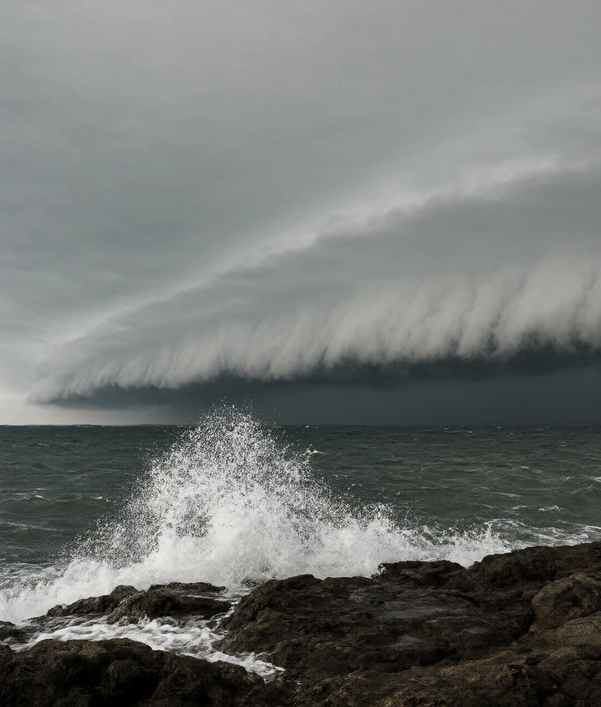

海水在九月存下的热量，会一直记账到十月，再决定台风走哪条路
台风的能量，来自海水蒸发带走的热。
蒸发就是水变成水蒸气。暖湿空气往上升，水汽再凝结成云，把热放出来。
凝结就是水蒸气变回水。这一放热，台风就有了动力。
这套循环要转起来，海面温度是一道硬门槛。
一般要求海表温度不低于 26.5 摄氏度。
而且这个温度要维持到水下约 50 米深，相当于十几层楼的高度。
否则海浪一搅，冷水翻上来，供给就断了。
26.5 摄氏度这个数，来自长期观测的经验统计，不是物理定律。
它是归纳出来的：绝大多数热带气旋生成时，海温都在这个值以上。
所以它有例外。
海温够，但高空风切变太强，气旋照样长不起来。
海温略低，但有强盛的季风辐合，偶尔也能生成弱热带风暴。
把阈值当成开关，是最常见的误读。好比烧水，火够大才开得了锅，但不等于火一大就必开。
所以十月还有台风，第一层原因很简单。
西北太平洋的海水，十月仍然超过 26.5 摄氏度。
菲律宾以东、南海中部的海温，常年要到十一月才跌破这条线。
海水为什么到十月还这么暖？
因为水的比热容大得离谱。
把 1 千克水升高 1 摄氏度，需要约 4200 焦耳。
同样质量的空气，只要约 1000 焦耳。
换算一下：同样一锅水，和同样一锅空气，加热难度差四倍多。
加上海洋上层几十米的混合层一起蓄热，海水升温和降温都比陆地慢得多。
结果就是：一年里海温最高的时候不在夏至。
它在八月末到九月，比太阳最强的时间滞后约一个月。
十月的海水，承接的是九月的余温。好比一个巨大的热水袋，晚上还在放热。
换算一下：太阳在 6 月底最强，海水要到 8 月底才最热。中间隔了整整两个月。
陆地早就凉了，海还在往外送热。
这层滞后可以量出来。
西北太平洋 10 月的海表温度，通常仍比 6 月高 1 到 2 摄氏度。
也就是说，单看热量条件，十月比六月更适合台风生成。
这就是「秋台风」在统计上更强的物理基础。
一片海水的热量，能撑起多大的风？
台风自己不会选择方向。
它大部分时间被周围的大尺度气流推着走。其中最主要的是副热带高压。
副热带高压，是海面上一个稳定的大范围高压区。
气流在它边缘顺时针绕行。台风通常沿着它的南侧或西南侧，往西移动。
这就是影响华南、海南的典型路径。就像纸船漂在河上，方向由水流决定。
到了秋天，副高开始南撤、东退，形态变得更不稳定。
它退得慢，台风就被压在偏南的路径上西行。
它一旦断裂，或被冷空气打击，台风就可能转向北上。
历史统计里，秋季台风的路径预报误差，明显高于盛夏。
原因就在这里：引导气流本身在快速变化。
还有一个容易被忽略的机制：双台风效应。
两个气旋距离足够近时，会绕着共同的中心互旋。
路径出现打转、突然加速，甚至合并。秋季并不少见，也是预报员最头疼的情形之一。
既然它自己不会拐弯，那是谁在推它？
秋季特有的角色，是南下的冷空气。
它和台风相遇时，会同时做两件相反的事。
好比往灶里添柴，和往灶里泼水，是同一双手能干出的两种结果。
第一件是「添柴」。
冷高压和台风之间的气压差被拉大，风速随之增强，风雨范围扩大。
华南沿海秋季的大范围大风，很多是这种气压差叠加的结果。
台风本体其实没那么强。这就是「秋台猛于虎」的来源之一。
第二件是「拆台」。
冷空气侵入台风内核，会破坏它的暖心结构，切断水汽供应。
台风迅速减弱，甚至变性为温带气旋。
同一个过程，在不同距离、不同强度下，效果完全相反。
哪一种占上风，目前尚无定论，要看冷空气的强度和台风的距离。
所以秋季台风的强度变化，常常是跳跃式的。
这里有一条明确的边界：「秋台风更强」是统计结论，不是单个台风的判决书。
它说的是十月出现超强台风的比例偏高。不意味着每一个十月台风都会很强。
用统计规律预判个体，是最容易出错的一步。
十月那股冷空气，到底帮忙还是拆台？

对个人来说，十月的防台和七月没有区别。
重点永远是那几件事。
关注气象台发布的预警等级，不要看自媒体标题。
提前准备 3 天的饮用水和不易腐食物。
给手机和充电宝充满电。把阳台上的花盆、晾衣杆收进来。
住低洼地带或老旧房屋的，提前确认转移路线。
一套完整的预警流程，从台风生成到登陆，往往只有 3 到 5 天。
对社会来说，秋季防台有一个特殊难点。
时间点在国庆假期之后、汛期结束之后，容易产生「这一年已经过去了」的松懈。
就像每年都要检查的灭火器。不能因为今年没着火，就不查。
而十月台风的致灾特点恰恰不同：风大，雨不一定大。
海上作业和沿海旅游的风险，高于内陆洪涝。
还有一个尚未解决的问题：气候变化会怎样改变秋季台风的次数和强度。
观测上，全球热带气旋的总数没有明显上升。
但强台风的比例，在部分海域确有增加。
模式预估在这一点上分歧明显，不同研究给出的结论方向都不一致，学界仍存在争议。
这不是一个已经写好的答案，而是一个正在被观测和争论的问题。
台风要生成，海表温度通常要达到多少？
D 解析：这是长期观测归纳出来的经验值，不是物理开关；还要暖水层有约 50 米厚。
海温最高点为什么不出现在夏至？
B 解析：1 千克水升 1 摄氏度，要约 4200 焦耳。同质量空气只要约 1000 焦耳。所以海洋升降温都慢。
秋季台风的路径预报，为什么误差更大？
C 解析：台风自己不会选路，被副高推着走。副高一不稳定，路径就跟着变。
冷空气撞上台风，最可能发生什么？
A 解析：拉开气压差就起大风，侵入内核就破坏暖心结构。同一个过程，结果可能相反。
「秋台风更强」这句话该怎么理解？
D 解析：这是群体规律，不是单个台风的判决书。用统计预判个体，最容易出错。